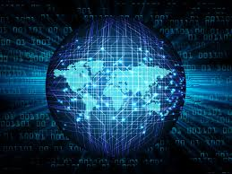

La seguridad informática, también conocida como ciberseguridad o seguridad de tecnología de la información, es el área relacionada con la informática y la telemática que se enfoca en la protección de la infraestructura computacional y todo lo relacionado con esta y, especialmente, la información contenida en una computadora o circulante a través de las redes de computadoras.1 Para ello existen una serie de estándares, protocolos, métodos, reglas, herramientas y leyes concebidas para minimizar los posibles riesgos a la infraestructura o a la información. La ciberseguridad comprende software (bases de datos, metadatos, archivos), hardware, redes de computadoras y todo lo que la organización valore y signifique un riesgo si esta información confidencial llega a manos de otras personas, convirtiéndose, por ejemplo, en información privilegiada.
A seminal figure in American hacking, Kevin Mitnick got his start as a teen. In 1981, he was charged with stealing computer manuals from Pacific Bell. In 1982 he hacked the North American Defense Command (NORAD), which inspired the 1983 film "War Games." In 1989, he hacked Digital Equipment Corporation's (DEC) network and made copies of their software. Because DEC was a leading computer manufacturer at the time, this act put Mitnick on the map. He was later arrested, convicted and sent to prison. During his conditional release, he hacked Pacific Bell's voicemail systems.
Anonymous got its start in 2003 on 4chan message boards in an unnamed forum. The group exhibits little organization and is loosely focused on the concept of social justice. For example, in 2008 the group took issue with the Church of Scientology and begin disabling their websites, thus negatively impacting theirs search rankings in Google and overwhelming its fax machines with all-black images. In March 2008, a group of "Anons" marched passed Scientology centers around the world wearing the now-famous Guy Fawkes mask. As noted by The New Yorker, while the FBI and other law enforcement agencies have tracked down some of the group's more prolific members, the lack of any real hierarchy makes it almost impossible to eliminate Anonymous as a whole.
In 2001, 20-year-old Adrian Lamo used an unprotected content management tool at Yahoo to modify a Reuters article and add a fake quote attributed to former Attorney General John Ashcroft. Often, Lamo would hack systems and then notify both the press and his victims — in some cases, he'd help clean up the mess to improve their security. As Wired points out, however, Lamo took things too far in 2002, when he hacked The New York Times' intranet, added himself to the list of expert sources and began conducting research on high-profile public figures. Because he preferred to wander the streets with little more than a backpack and often had no fixed address, Lamo earned the moniker "The Homeless Hacker."
According to the New York Daily News, Gonzalez, dubbed "soupnazi," got his start as the "troubled pack leader of computer nerds" at his Miami high school. He eventually became active on criminal commerce site Shadowcrew.com and was considered one of its best hackers and moderators. At 22, Gonzalez was arrested in New York for debit card fraud related to stealing data from millions of card accounts. To avoid jail time, he became an informant for the Secret Service, ultimately helping indict dozens of Shadowcrew members.
Matthew Bevan and Richard Pryce are a team of British hackers who hacked into multiple military networks in 1996, including Griffiss Air Force Base, the Defense Information System Agency and the Korean Atomic Research Institute (KARI).
Bevan (Kuji) and Pryce (Datastream Cowboy) have been accused of nearly starting a third world war after they dumped KARI research onto American military systems. Bevan claims he was looking to prove a UFO conspiracy theory, and according to the BBC, his case bears resemblance to that of Gary McKinnon. Malicious intent or not, Bevan and Pryce demonstrated that even military networks are vulnerable.
Jeanson James Ancheta had no interest in hacking systems for credit card data or crashing networks to deliver social justice. Instead, Ancheta was curious about the use of bots — software-based robots that can infect and ultimately control computer systems. Using a series of large-scale "botnets," he was able to compromise more than 400,000 computers in 2005. According to Ars Technica, he then rented these machines out to advertising companies and was also paid to directly install bots or adware on specific systems. Ancheta was given 57 months in prison, and his sentence marked the first time a hacker was sent to jail for the use of botnet technology.
In February 2000, 15-year-old Michael Calce, also known as "Mafiaboy," discovered how to take over networks of university computers and used their combined resources to disrupt the number-one search engine at the time: Yahoo. Within a week, he'd also brought down Dell, eBay, CNN and Amazon using a dedicated denial of service (DDoS) attack that overwhelmed corporate servers and caused websites to crash. Calce's wake-up call was perhaps the most jarring for investors and Internet proponents. If the biggest website in the world — valued at over $1 billion — could be so easily sidelined, was any online data truly safe? It's not an exaggeration to say that the development of cybercrime legislation suddenly became a top government priority thanks to Calce's hack.